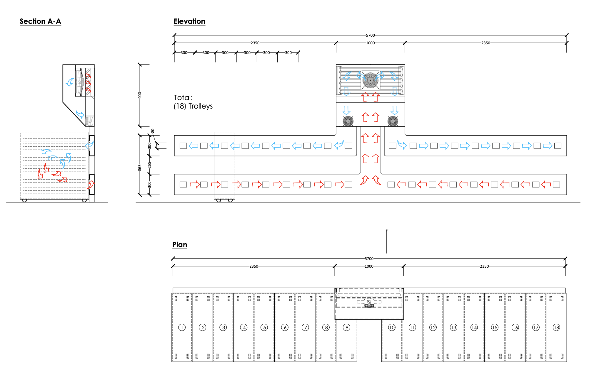
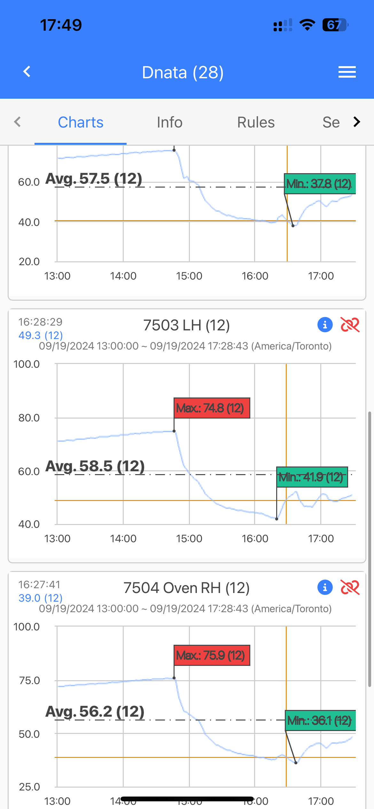
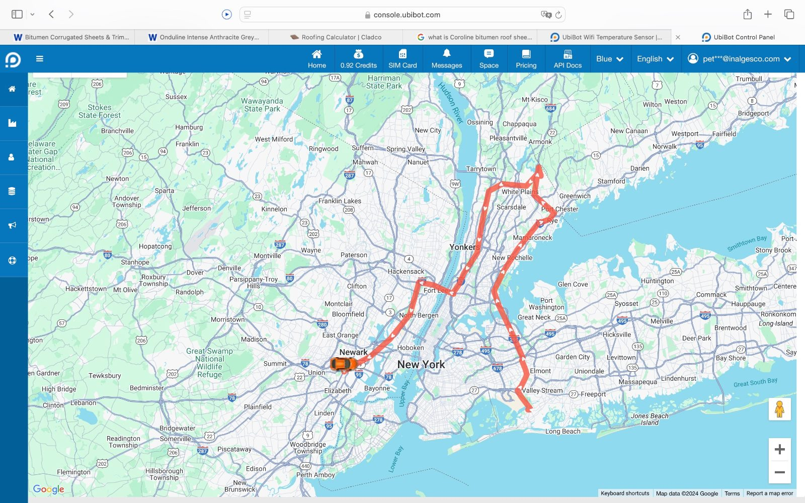

How ChillRail works
US Patent Application 17/893,958 — Notice of Allowance, August 2024
Make the cart the cooled volume. Everything else follows from that one change.
System principles
A plenum generates filtered refrigerated air and forces it into the airline carts through a series of ducts and cart-operated dampers.
Air enters each cart at constant pressure and returns through the lower vent. Internal cart temperature is recorded and transmitted wirelessly to the cloud.
Carts without door vents are served through a dry-ice drawer, into which ChillRail feeds the same pressurised air.

What changes for the driver
Almost nothing. That is deliberate.
- Loading — carts go on exactly as they do today, strapped in the same way with a ratchet strap
- Operation — air starts when a cart is placed against the rail and shuts off when it is removed. No driver input
- Ovens and loose items — a refrigerated box mounted at high level above the carts holds ovens, milk, even ice cream
- Unvented carts — served through the dry-ice drawer slots instead of door vents
- Records — captured automatically. Nobody writes anything down
Specification
- Power — inverter driven, generates its own supply regardless of vehicle make, model or age. Net Zero carbon
- Monitoring — built-in logger records each cart and transmits to the cloud with location. Stored indefinitely or exported as CSV
- Hygiene — food-grade stainless steel or powder coat; Armacell® insulation with Microban® to inhibit mould and bacteria
- Air treatment — inline UV filter plus HEPA-style particulate filtration; condensate expelled, no standing tanks
- Cleaning — flushable to guidelines, water resistant
- Security — designed to screening directives with non-standard tamper-evident fixings to TCCA, FAA and CAA standards; vents designed to prevent concealment
- Install and training — fitted by our own employees, with on-site training for all staff during installation
End-to-end proof
Every cart’s internal temperature is logged every two seconds against the vehicle’s GPS position, visible live on desktop or mobile.
That gives you a continuous chill-chain record from dispatch cooler to aircraft door — the due diligence that neither refrigerated trucks nor dry ice can produce.


Book a 30-day paired trial
Fit ChillRail to one truck, leave an identical truck unmodified, and run both on live routes for 30 days. Fuel, service calls, pull-out temperatures and cold-chain compliance all become your own audited data before you commit to anything.
Arrange a trial